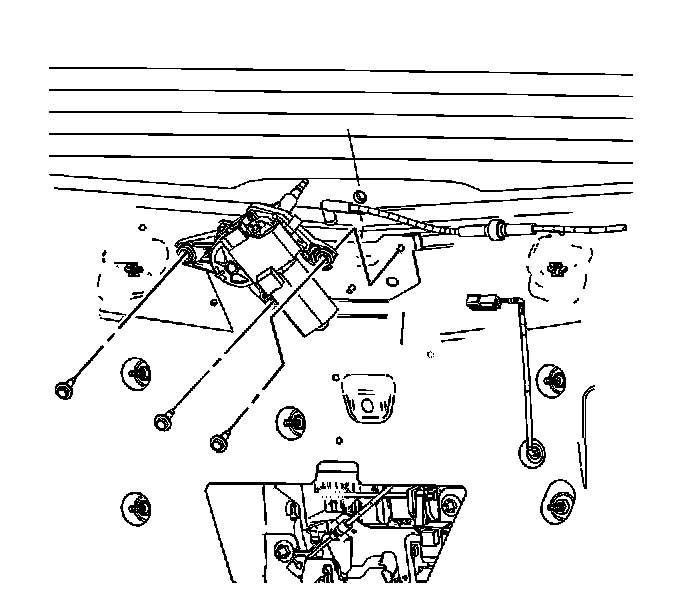

Liftgate Wiper Motor Replacement
Liftgate Wiper Motor Replacement
Removal Procedure
1. Remove the rear wiper arm. Refer to Rear Window Wiper Arm Replacement (Rear Window Wiper Arm Replacement) .

2. Remove the interior liftgate trim panel. Refer to Liftgate Trim Panel Replacement (w/o TB5) (Service and Repair)Liftgate Trim Panel Replacement (w/TB5) (Service and Repair) .
3. Disconnect the fluid line from the wiper motor.
4. Disconnect the wire connector from the wiper motor.
5. Remove the wiper motor attaching bolts.
6. Pull the wiper motor through the shaft grommet.
Installation Procedure
1. Lubricate the wiper motor shaft with windshield washer fluid. Push the wiper motor shaft through the grommet.
2. Apply thread lock to the wiper motor attaching bolts.
Notice: Refer to Fastener Notice (Fastener Notice) .
3. Install the wiper motor attaching bolts.
Tighten the bolts to 7 N.m (62 lb in).
4. Connect the wire connector to the wiper motor.
5. Connect the fluid line to the wiper motor.
6. Install the interior liftgate trim panel. Refer to Liftgate Trim Panel Replacement (w/o TB5) (Service and Repair)Liftgate Trim Panel Replacement (w/TB5) (Service and Repair) .
7. Install the rear wiper arm. Refer to Rear Window Wiper Arm Replacement (Rear Window Wiper Arm Replacement) .